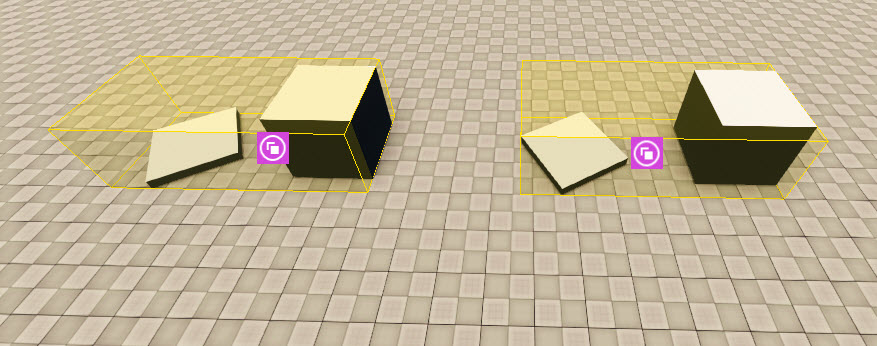
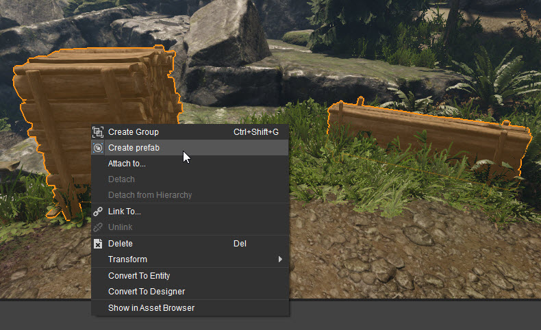
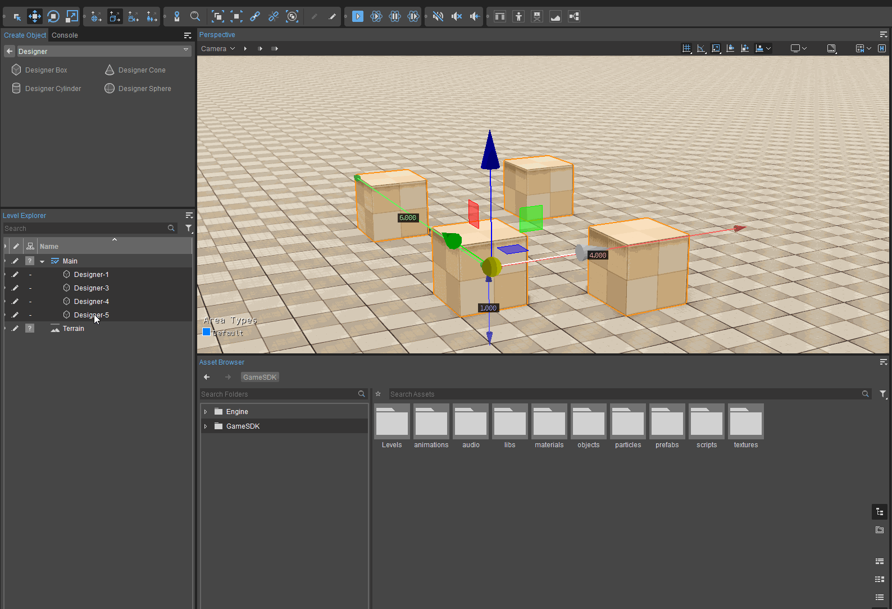
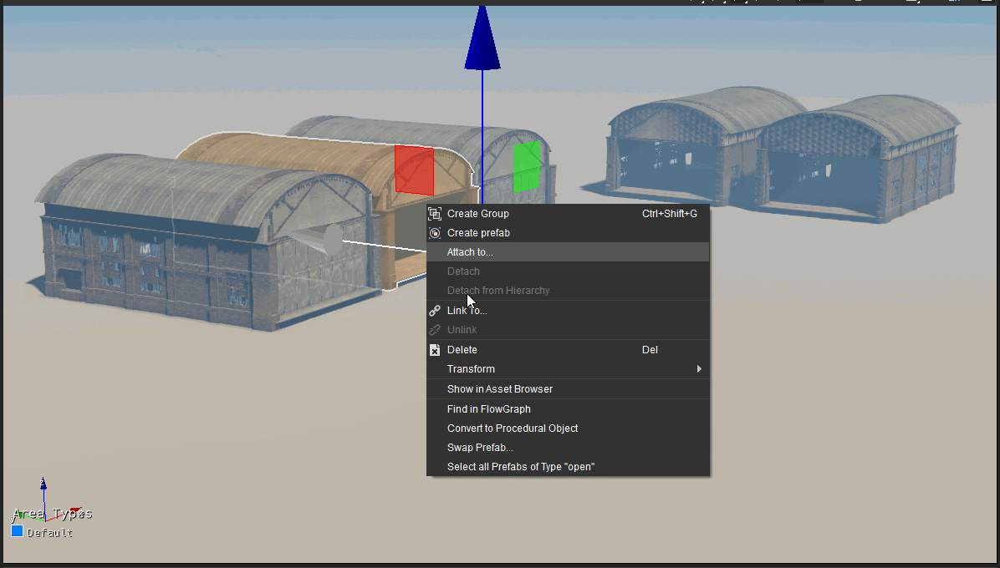

Обзор
Оглавление
Префабы — это группы объектов, которые можно размещать на уровне в качестве экземпляров. Экземпляр — это объект, который является точной копией любого другого объекта того же типа.
Изменение одного префаба универсально применяет изменения к каждому экземпляру объекта префаба.
Префабы — это отдельные ресурсы, и их можно найти с помощью браузера ресурсов.

Префабы поддерживают логику Flow Graph, поэтому обязательно ознакомьтесь с Сборные коммуникации учебник для получения дополнительной информации.
Создание нового префаба
Сначала разместите на уровне несколько объектов, которые вы хотите превратить в префаб. Выберите все объекты, которые вам нужны. Далее, щелкните правой кнопкой мыши на одном из выбранных объектов и выберите «Создать префаб».

Теперь заполните группу и имя для нового префаба. Префаб будет создан в текущей выбранной библиотеке.
Префаб создан и готов к использованию на уровне.
Альтернативно, префаб можно создать, перетащив несколько выбранных объектов из Level Explorer в браузер ресурсов. Объекты можно выбирать из нескольких слоев.

После присвоения пользовательского имени созданный префаб появится в списке Level Explorer.
Использование префабов
Ранее созданные префабы, которые были сохранены в каталоге ресурсов проекта, можно использовать на уровне, перетаскивая их во видовой экран из браузера ресурсов.
При этом автоматически создается нумерованный список экземпляра этого префаба в Level Explorer; первый экземпляр префаба shack_indoor, например, будет указано как shack_indoor-1 внутри Проводника. Последующие экземпляры будут пронумерованы. shack_indoor-2, shack_indoor-3и так далее.
Выбор всех экземпляров префаба
Если в Level Explorer или видовом экране выбран еще один экземпляр префаба, щелчок правой кнопкой мыши по любому из выбранных экземпляров создает контекстное меню с возможностью Выбрать все префабы типа "<имя-префаба>".
При выборе этой опции выбираются все экземпляры выбранного префаба, включенные в уровень, даже если они вложены в другие префабы.

Выберите все префабы типа «Открытый».
В приведенном выше примере щелчок правой кнопкой мыши по префабу открыть вызывает контекстное меню с возможностью Выберите все префабы типа «Открытый».. При нажатии на эту кнопку выбираются все префабы одного типа, включенные в уровень.
Альтернативно, пользователи могут выбрать один или несколько экземпляров префаба в Level Explorer или видовом экране и использовать сборный.select_all_instances_of_type консольную команду, чтобы получить тот же результат.
Обратите внимание, что Выберите все префабы типа «<имя-префаба>». не появится если выбраны экземпляры нескольких разных префабов или когда выбранный ресурс не является префабом.
Параметры объекта префаба
При работе с префабами есть несколько важных параметров:
| Сборный дом | |
|---|---|
Автоматическое обновление всех экземпляров | Если этот флажок установлен, изменения, внесенные в один экземпляр префаба, будут обновлены во всех остальных экземплярах. |
Преобразование режима поворота | Позволяет перемещать ось префаба. |
| Операторы | |
Объекты |
|
Редактировать |
Любые изменения будут обновлены и в других экземплярах префаба.
|
Сборные инструменты |
|
Сборные объекты | Список объектов, составляющих префаб. |